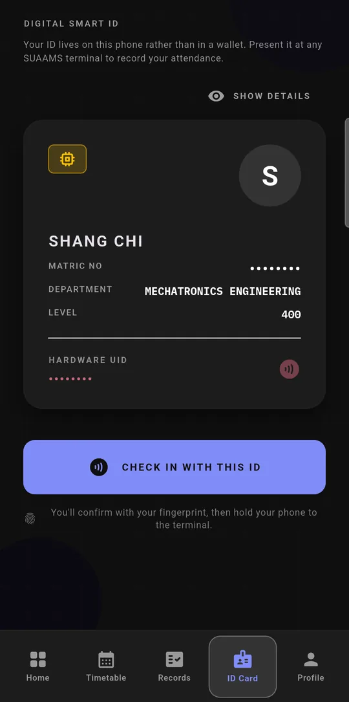
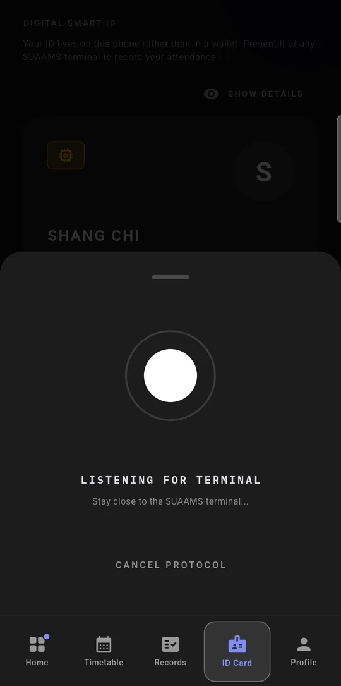
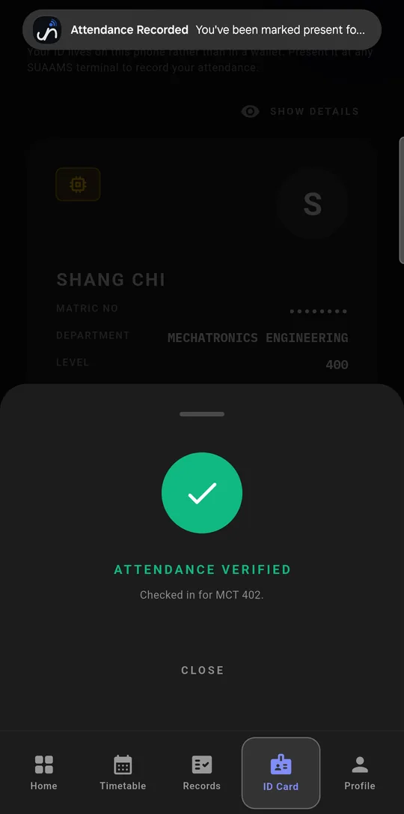
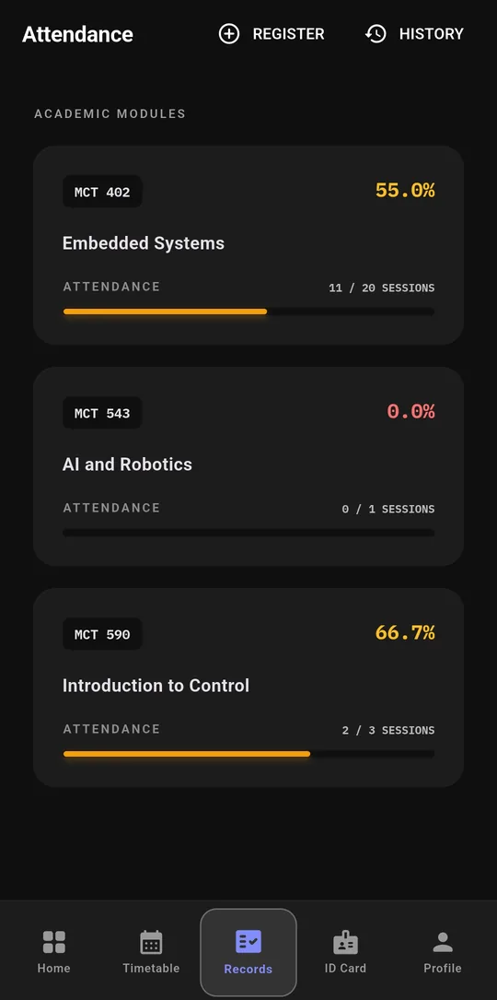

Tap your phone at the door. You're marked present.
Your fingerprint unlocks a one-time code on your own phone. The reader takes it in a tenth of a second, and nobody can check in for you without your phone and your fingerprint or PIN.
Android now · iPhone coming later
fingerprint verified
AAAEEgAAAT5pSj393V4BJ6kGWbueNNGq
- Who, which class, until when
- student 1042 · session 318 · expires 10 s after minting
- A signature only the server can make
- Change one character and the reader is refused.

its screen showing the class and the count
187 of 200 / 200
checked in to MCT 402 Embedded Systems
- 08:04:12••••7731PRESENT
- 08:04:11••••0458PRESENT
- 08:04:11••••2210PRESENT
- 08:04:10••••6095PRESENT
A 200-student hall, checked in without a queue.
Each dot is one student. A tap takes under half a second, so the whole hall is through in under 2 minutes. A fingerprint scanner on the door, at about 2 seconds a student, would take about 7.
Worked out from per-student timings, not timed with a crowd.



One check-in, start to finish.
The lecturer starts the class from the app or the web portal. Then each student does this at the door.
-
1 Confirm it's you -
2 At the reader -
3 Marked present
-
t = 0
Confirm it's you
Press Check in and touch the fingerprint sensor, or enter your phone's PIN. The app does nothing until your phone confirms it's you, then it asks the server for a signed code.
-
within 10 s
Tap the reader
Hold your phone to the reader at the door, within about 4 cm. The phone hands over its 32-character code in one exchange of about a tenth of a second. The code belongs to you and this class only, and it expires after 10 seconds.
-
+ 0.1 s
You're marked
The server checks the code and marks you present, or late if the timetable says class started more than 10 minutes ago. You get a notification, and your name shows up on the lecturer's live list.
No NFC on your phone?
Every reader also broadcasts a short Bluetooth code that changes every 5 seconds, so phones without NFC can check in too.
Reader lost its connection?
It keeps the taps and sends them when it's back online, and the lecturer confirms them.
Know where you stand before exams.
Every course shows how many classes you've attended out of how many were held, so nobody finds out about a shortfall on exam day.
How the app colours a course
- Green at 75% or more
- Amber from 50% up to 75%
- Red under 50%
Late check-ins count as attended.

To check in for you, a friend needs your phone and your fingerprint or PIN.
Here's each way someone might try to fake attendance, what stops it, and the one gap that's still open.
A friend uses your phone
needs your fingerprint or PIN
The app won't make a check-in code until the phone confirms its owner's fingerprint or PIN. Holding your phone isn't enough without your fingerprint or PIN.
You sign in on a friend's phone
one phone, one account
Your account locks to the first phone you sign in on, and that phone can't hold a second student's account. Moving to a new phone means seeing an admin with your school ID.
A check-in counts for the wrong class
bound to one class, once
A code only works for the class you're enrolled in that's running right now. You can only be marked once per class.
A code gets passed to someone outside
dead in 10 s, needs ~4 cm
A code belongs to one student and one class and expires after 10 seconds. A tap also needs the phone within about 4 cm of the reader.
Someone makes up a code
only the server can sign
Only the server can sign a code, so it rejects any code that was changed or invented. Each reader also sends its own secret with every request, so a fake reader gets nowhere.
The phone is rooted
tampered phones refused
When it starts, the app checks whether the phone has been rooted or tampered with. On a phone that fails, it won't check in.
Not stopped yetA lent phone
fix planned, not built
A student who unlocks their phone for a friend, or adds a friend's fingerprint to it, can still get that friend checked in. The planned fix is a check-in key tied to the fingerprints already on the phone, so adding a new one breaks it.
What each person gets.
Students
Check in at the door, see today's classes and the week's timetable, and track attendance course by course.
Lecturers
Start a class from your phone or the portal, watch students arrive live, mark anyone the reader couldn't, and export the register.
Heads of department
See the department's attendance by level, and every student's attendance percentage in one list.
Administrators
Import students, courses and timetables in bulk, manage readers by room, and see every change in the activity log.
Your fingerprint never leaves your phone.
SUAAMS doesn't collect fingerprints at all. Your phone checks your finger itself and only tells the app whether it matched. The server only ever sees attendance records.
- No fingerprint or face data. Nothing biometric is stored or sent anywhere.
- No location tracking. The tap proves you're at the door, so the app never reads your location. Android 11 and older make any Bluetooth app ask for the location permission; SUAAMS asks there for that reason only.
- Only what attendance needs. Your name, matric number, department and level, courses, attendance records, a phone ID, and a token for push notifications.
- Encrypted in transit. The app, readers and portal talk to the server over HTTPS only.
Students: install SUAAMS.
The app is still in testing, so it installs from our own page rather than the Play Store. It takes about a minute, and the page walks you through it.